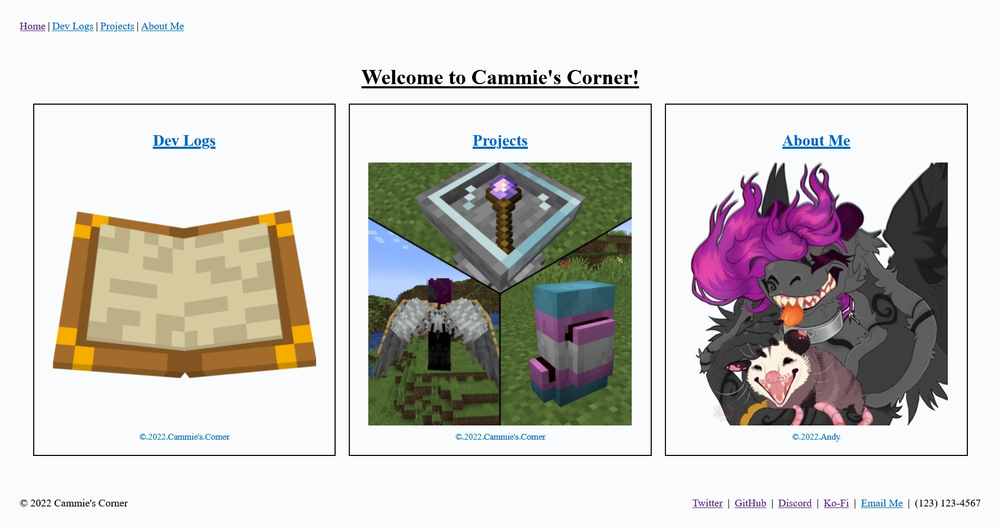
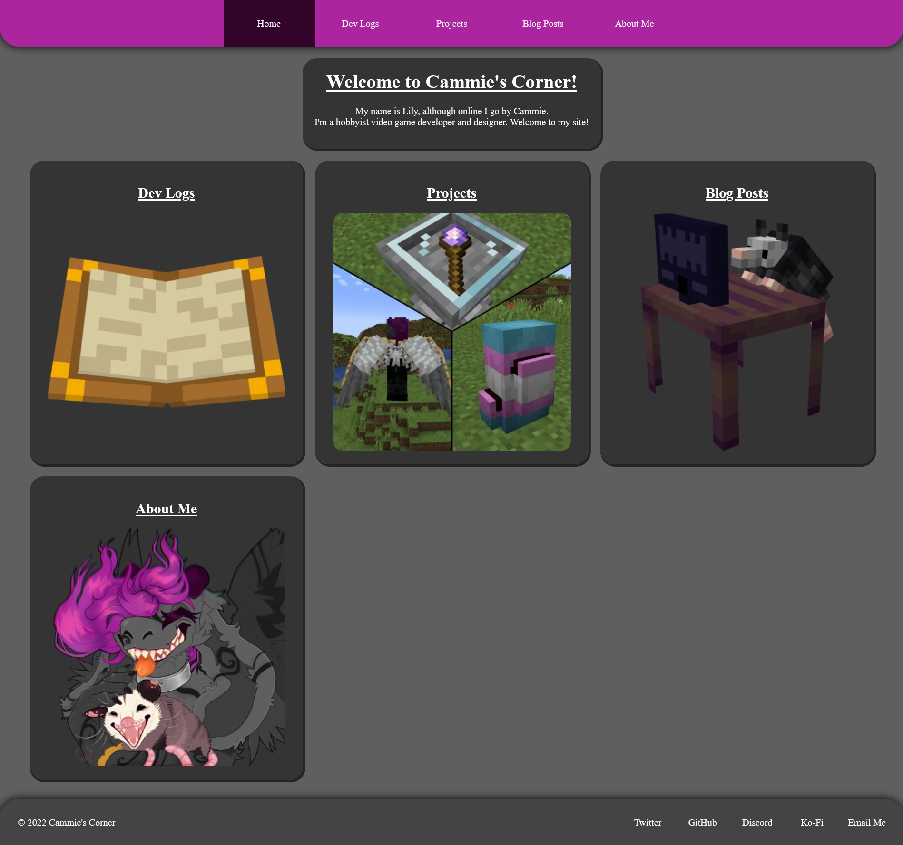

04 Feb 2022
I had to present this website as a project for my Web Development Fundamentals class yesterday. It was very rough, as I tried to keep any CSS I used to a minimum, since the project itself was focused on the HTML structure of our sites.
If you need an idea of what my site looked like at the time, here it is in all its glory:

As you can probably see, it doesn't look that great. Now, for the sake of having records, as it's possible it changes soon, I've included what the site currently looks like:

It looks so much better already. As of right now, I'm using a flexbox for both the header and the footer, and I'm using the colour scheme of my character: magenta, dark purple, light grey, and dark grey. I thought that would be kind of cute, since this is my personal website.
I also have it so that when you hover over any of the links on the site, it'll fade to the colour it should be when you hover over it, which looks a lot better, at least in my opinion, than just going straight to the colour.
Finally, there's one last little thing I left in the site: secrets! Or rather, a single secret. It's a "super secret" hidden credits page for all the images used on the site. I wish you good luck in finding it!